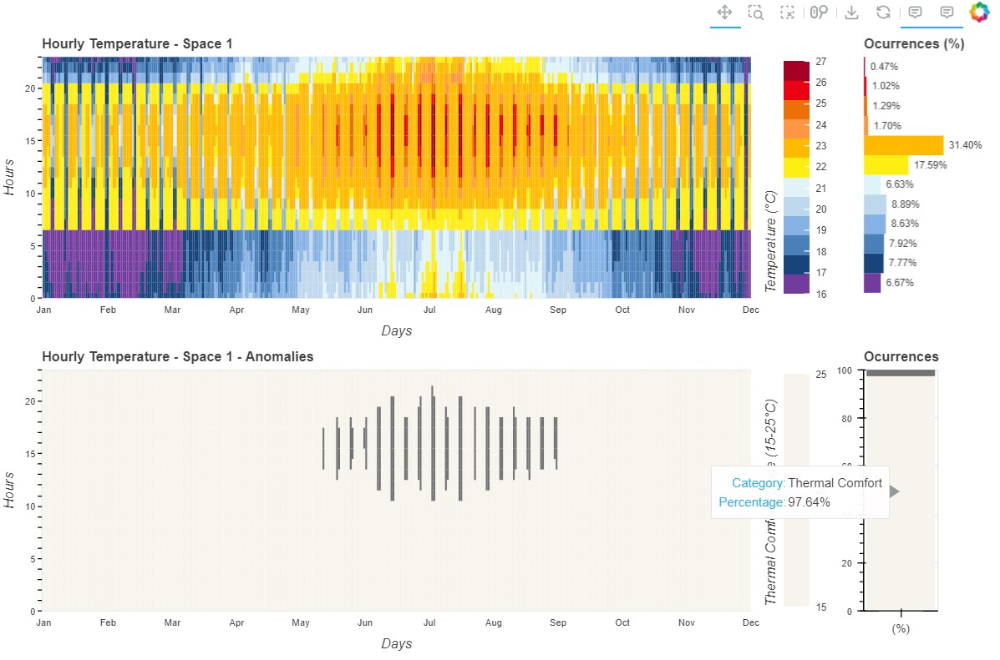

Heatmap code
Building Indoor Temperature
Visualization of Hourly Temperature Data Across Two Different Sheets
This script reads temperature data from two sheets in an Excel file, processes it, and visualizes it using Bokeh. The resulting grid plot consists of four plots: two heatmaps representing hourly temperature variations for each space, and two bar charts summarizing the occurrences of temperature ranges.
The first heatmap shows the hourly temperature for Space 1, while the second heatmap highlights thermal comfort anomalies. Two accompanying bar charts display the occurrence percentages of temperature ranges and thermal comfort ranges, respectively.
- Modules:
pandas: For data manipulation and analysis.
numpy: For numerical operations and array handling.
bokeh.plotting: For creating interactive plots with Bokeh.
bokeh.transform: For mapping data values to visual attributes.
bokeh.models: For various interactive Bokeh components like tools, color mappers, and axes formatting.
bokeh.layouts: For arranging plots in a grid layout.
- Functions:
load_data(file_path: str) -> tuple: Loads data from the specified Excel file and returns two DataFrames for the two sheets.
prepare_heatmap_data(df: pd.DataFrame) -> tuple: Prepares the data for the heatmaps by organizing it into grid format.
create_heatmap(p: figure, temperatures_grid: np.ndarray, colors: list) -> figure: Creates a Bokeh heatmap plot with the provided temperature data.
create_bar_chart(occurrences: dict, colors: list) -> figure: Creates a Bokeh horizontal bar chart displaying the occurrence percentages of temperature ranges.
prepare_thermal_comfort_data(df: pd.DataFrame) -> tuple: Prepares the data for the thermal comfort heatmap and stacked bar chart.
create_thermal_comfort_heatmap(p: figure, temperatures_grid: np.ndarray, colors: list) -> figure: Creates a Bokeh heatmap plot for thermal comfort anomalies.
create_stacked_bar_chart(percentages: list) -> figure: Creates a Bokeh stacked bar chart displaying the occurrence percentages of thermal comfort ranges.
show_plots(heatmap1: figure, bar_chart1: figure, heatmap2: figure, bar_chart2: figure) -> None: Displays the final Bokeh plots in a grid layout.
- Visualization_3.Heatmap.create_bar_chart(occurrences: dict, colors: list) figure[source]
Creates a Bokeh horizontal bar chart displaying the occurrence percentages of temperature ranges.
- Parameters:
occurrences (dict) – Dictionary of temperature ranges and their occurrence percentages.
colors (list) – Color palette for the bar chart.
- Returns:
Bokeh figure with the bar chart.
- Return type:
figure
- Visualization_3.Heatmap.create_heatmap(p: figure, temperatures_grid: ndarray, colors: list) figure[source]
Creates a Bokeh heatmap plot with the provided temperature data.
- Parameters:
p (figure) – Bokeh figure to add the heatmap to.
temperatures_grid (np.ndarray) – 2D array of temperature values.
colors (list) – Color palette for the heatmap.
- Returns:
Bokeh figure with the heatmap.
- Return type:
figure
- Visualization_3.Heatmap.create_stacked_bar_chart(percentages: list) figure[source]
Creates a Bokeh stacked bar chart displaying the occurrence percentages of thermal comfort ranges.
- Parameters:
percentages (list) – List of percentages for thermal comfort ranges.
- Returns:
Bokeh figure with the stacked bar chart.
- Return type:
figure
- Visualization_3.Heatmap.create_thermal_comfort_heatmap(p: figure, temperatures_grid: ndarray, colors: list) figure[source]
Creates a Bokeh heatmap plot for thermal comfort anomalies.
- Parameters:
p (figure) – Bokeh figure to add the heatmap to.
temperatures_grid (np.ndarray) – 2D array of temperature values.
colors (list) – Color palette for the heatmap.
- Returns:
Bokeh figure with the thermal comfort heatmap.
- Return type:
figure
- Visualization_3.Heatmap.load_data(file_path: str) tuple[source]
Loads data from the specified Excel file.
- Parameters:
file_path (str) – Path to the Excel file containing the data.
- Returns:
Two DataFrames, one for each sheet in the Excel file.
- Return type:
tuple
- Visualization_3.Heatmap.prepare_heatmap_data(df: DataFrame) tuple[source]
Prepares the data for the heatmaps by organizing it into grid format.
- Parameters:
df (pd.DataFrame) – DataFrame containing the temperature data.
- Returns:
Two arrays for temperatures and coordinates.
- Return type:
tuple
- Visualization_3.Heatmap.prepare_thermal_comfort_data(df: DataFrame) tuple[source]
Prepares the data for the thermal comfort heatmap and stacked bar chart.
- Parameters:
df (pd.DataFrame) – DataFrame containing the temperature data.
- Returns:
Data arrays and occurrences for thermal comfort analysis.
- Return type:
tuple
- Visualization_3.Heatmap.show_plots(heatmap1: figure, bar_chart1: figure, heatmap2: figure, bar_chart2: figure) None[source]
Displays the final Bokeh plots in a grid layout.
- Parameters:
heatmap1 (figure) – Bokeh figure with the first heatmap.
bar_chart1 (figure) – Bokeh figure with the first bar chart.
heatmap2 (figure) – Bokeh figure with the second heatmap.
bar_chart2 (figure) – Bokeh figure with the second bar chart.